전산응용조선제도기능사 (2001-07-22 기출문제)
1과목: 조선공학일반
1. 선체 중앙에 있어서 만재 흘수선으로 부터 건현 갑판의 선측에 있어서 상면까지의 높이는?
- 형심
- 건현
- 흘수
- 현호
(정답률: 알수없음)

2. 선박의 선형 중 선수루, 선교루, 선미루를 모두 가지는 선형은?
- 복갑판선
- 차랑갑판선
- 웰 갑판선
- 삼도형선
(정답률: 알수없음)
3. "O/O"로 표시되는 선박은?
- 유류 및 산적 화물선
- 원유 운반선
- 자동차 운반선
- 광석 및 유류 운반선
(정답률: 알수없음)
4. 다음 선박 중 어로선에 해당되는 것은?
- 냉장 운반선
- 저인망 어선
- 쇄빙선
- 연습선
(정답률: 알수없음)
5. 어떤 배의 중앙 횡단면적이 1584m2, 최대폭이 68m , 흘수가 26m 이면 중앙횡단면 계수(CM)는?
- 0.793
- 0.695
- 0.896
- 0.957
(정답률: 알수없음)
6. 심프슨(Simpson) 제 1법칙으로 계산한 아래 도형의 면적은? (단, y1 = 2 m, y2 = 3 m, y3 = 3 m, h = 1.5 m 이다.)
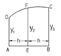
- 8.0(m2)
- 8.5(m2)
- 9.0(m2)
- 9.5(m2)
(정답률: 알수없음)
7. 다음 조선공학과 관련된 용어 설명 중 틀린 것은?
- 복원 모멘트 : 배가 경사상태에서 원상태로 돌아오려는 힘
- 경사 모멘트 : 배가 경사상태에서 더 경사를 시키려는 힘
- 침수율 : 어떤 구획의 물로 점유될 수 있는 용적의 그 구획 전체에 대한 백분율
- 메타센터 : 배가 경사상태에서 원상태로 돌아오는 데 걸리는 힘
(정답률: 알수없음)
8. 선박이 그 중심점을 지나는 수평 가로축의 둘레에 대하여 주기적인 회전운동을 하는 것은?
- 횡요(rolling)
- 종요(pitching)
- 선수동요(yawing)
- 전후동요(surging)
(정답률: 알수없음)
9. 선체 표면의 급격한 형상 변화 때문에 발생하는 소용돌이에 기인하는 저항은?
- 마찰저항
- 공기저항
- 조와저항
- 잉여저항
(정답률: 알수없음)
10. 강재나 알루미늄 합금 등의 전해부식 방지용 보호판으로 사용되는 재료는?
- 주석(Sn)
- 인(P)
- 납(Pb)
- 아연(Zn)
(정답률: 알수없음)
11. 선내의 냉동화물창고, 냉장식료창고, 거주실 등에 사용되는 방열재가 아닌 것은?
- 리그넘바이티
- 콜크(cork)
- 발사(balsa)
- 합성수지
(정답률: 알수없음)
12. 선박 건조에 사용되는 FRP를 잘못 설명한 것은?
- 선체에 결합부가 생기지 않아 이상적인 구조물을 만들 수 있다.
- 비중이 강철보다 작다.
- 선체 표면이 거칠어서 마찰저항이 크게 된다.
- 내식성이 좋아 해수에 잘 견딘다.
(정답률: 알수없음)
13. 아래 그림과 같은 앵커에서 화살표로 표시된 부분은?
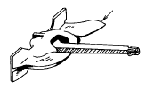
- 앵커 헤드(anchor head)
- 앵커 생크(anchor shank)
- 헤드 핀(head Pin)
- 앵커 링(anchor ring)
(정답률: 알수없음)
14. 다음 의장품 중 계선을 위한 설비가 아닌 것은?
- 양묘기(windlass)
- 발럿(bollard)
- 데릭 포스트(derrick post)
- 페어 리더(fair leader)
(정답률: 알수없음)
15. 매 cm 당 배수톤수란?
- 선체 흘수의 변화가 1 cm 되게 하는 화물의 무게
- 선수트림이 1 cm 일어나게 하는 이동 화물의 무게
- 배수량 1 ton 을 변화시켰을 때의 흘수의 변화량(cm)
- 밸러스트 탱크의 물을 1 cm 채웠을 때 흘수의 변화량
(정답률: 알수없음)
16. 선박의 무게 작용선과 부력 작용선간의 거리는?
- 정적 복원정
- 모멘트
- 메타센타 높이
- 복원 모멘트
(정답률: 알수없음)
17. 선박의 횡 동요를 방지하기 위한 것이 아닌 것은?
- 만곡부 용골
- 용골
- 핀 안정기
- 감요수조
(정답률: 알수없음)
18. 스크류 프로펠러의 날개 수로 가장 많이 사용하는 것은?
- 1 - 2 개
- 3 - 5 개
- 5 - 6 개
- 7 - 8 개
(정답률: 알수없음)
19. 롤 온 오프(roll on/off)선의 특징이 아닌 것은?
- 수평방향의 하역 작업이 용이하다.
- 하역시 자동차가 선내로 드나들기 쉽다.
- 화물창 내에는 횡격벽이 없다.
- 선체 구조상 충돌, 좌초시 선내 침수가 늦다.
(정답률: 알수없음)
20. 선체용 주재료와 가장 거리가 먼 것은?
- 강판
- 형재
- 경합금
- 단강
(정답률: 알수없음)
2과목: 선박건조
21. 조선소에서 압축공기를 사용하는 작업이 아닌 것은?
- 리벳 이음
- 코킹(caulking)
- 청소
- 절단 작업
(정답률: 알수없음)
22. 절단기계가 아닌 것은?
- 시어링 머신
- 앵글 커터
- 프릭션 쇼
- 카운터 싱킹 머신
(정답률: 알수없음)
23. 수치제어 자동 가스 절단기의 장점이 아닌 것은?
- 열을 발생시키지 않으므로 열영향이 없다.
- 절단 정밀도 및 품질이 향상된다.
- 마킹 및 절단의 공수가 감소된다.
- 절단 능력의 향상을 기할 수 있다.
(정답률: 알수없음)
24. 컴퓨터를 사용하여 자동적으로 마킹하는 것은?
- E.P.M 장치
- N.C 장치
- 프레임 플레이너
- 사진 마킹
(정답률: 알수없음)
25. 블록의 운반용 피스(piece) 부착에 있어서 고려해야 할 사항이 아닌 것은?
- 블록의 중심 위치
- 와이어(wire)의 각도
- 블록의 국부강도
- 선대와의 거리
(정답률: 알수없음)
26. 용접 토치의 종류가 아닌 것은?
- 저압식
- 중압식
- 보통식
- 고압식
(정답률: 알수없음)
27. 선대 공사의 공정순서로 가장 옳은 것은?
- 선체 지지와 설치 → 블록탑재 → 끝손질 → 선형의 결정 → 검사
- 선체 지지와 설치 → 선형의 결정 → 블록탑재 → 끝손질 → 검사
- 선체 지지와 설치 → 블록탑재 → 선형의 결정 → 끝손질 → 검사
- 블록탑재 → 선체 지지와 설치 → 검사 → 끝손질 → 선형의 결정
(정답률: 알수없음)
28. 압력배관용 강관의 스케줄 번호가 의미하는 것은?
- 관의 바깥지름
- 관의 안지름
- 관의 호칭지름
- 관의 두께
(정답률: 알수없음)
29. 선박의 세로 진수시 선미부터 진수를 시키는 이유가 아닌 것은?
- 빨리 부력을 얻을 수 있다.
- 타 및 프로펠러를 보호할 수 있다.
- 진수시에 생기는 피보팅 하중을 견딜 수 있다.
- 평행상태를 유지하며 진수할 수 있다.
(정답률: 알수없음)
30. 선체 탱크의 내부용접 작업 중 안전에 위배되는 사항은?
- 머리등 신체의 노출부분이 접촉되어 감전되지 않도록 한다.
- 인화성 물질 또는 그 잔여물 등을 제거한 후 작업한다.
- 환풍장치를 설치한 후 작업한다.
- 환풍장치가 없을 시는 산소를 계속 공급하여 공기를 깨끗이 한다.
(정답률: 알수없음)
31. 드릴 작업시 보안경의 사용은?
- 경우에 따라 사용한다.
- 사용할 필요가 없다.
- 반드시 사용한다.
- 주축의 회전수가 빠른 경우에만 사용한다.
(정답률: 알수없음)
32. 아래 그림은 어떤 위험물의 표시인가?
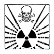
- 유독물질
- 방사성물질
- 폭발물질
- 가연성물질
(정답률: 알수없음)
33. 발(足) 커버(cover)와 관계가 있는 작업자는?
- 선거공
- 용접공
- 가공공
- 현도공
(정답률: 알수없음)
34. 축척을 원척으로 확대하는 기계 중 마킹 및 절단작업이 가능한 것은?
- 사진 마킹 장치
- 유니그래프
- 모노풀
- 시코마트
(정답률: 알수없음)
35. 선체 조립작업 등에서 문형 피스와 함께 사용되는 것은?
- 턴 버클 피스
- 스트롱 버클 피스
- 도그 피스
- 웨지(쐐기)
(정답률: 알수없음)
36. 선박에서 주요치수라 함은?
- 건현, 트림, 현호 및 캠버
- 길이, 폭, 깊이 및 흘수
- 길이, 건현, 깊이 및 흘수
- 폭, 깊이, 현호 및 캠버
(정답률: 알수없음)
37. 중심선 거더, 내저판 및 늑판들은 어느 구조의 부재들인가?
- 이중저 구조
- 격벽 구조
- 외판 구조
- 갑판 구조
(정답률: 알수없음)
38. 중심선 용골의 치수는 어느 것에 의해 결정되는가?
- 배의 길이
- 배의 깊이
- 배의 폭
- 배의 흘수
(정답률: 알수없음)
39. 조립늑판에 대한 설명으로 옳은 것은?
- 선저외판의 손상시 선내로 침수하는 것을 방지하기 위해 설치한다.
- 비교적 강도가 필요치 않는 곳에 중량을 경감하게 하기 위해 설치한다.
- 선저외판과 외측 브래킷의 연결을 견고하게 하기 위해 설치한다.
- 선체 종강력 부재로서 2중저의 구획을 만들어 주기 위해 설치한다.
(정답률: 알수없음)
40. 횡격벽의 기능을 설명한 것으로 틀린 것은?
- 침수시 선박의 안전을 도모할 수 있다.
- 화물을 적재할 때 화물을 종류별로 구분하여 적재하는데 이용할 수 있다.
- 파랑 중에서 일어나는 래킹에 대한 강도를 유지한다.
- 파랑 중에서 호깅상태에 대한 강도를 유지한다.
(정답률: 알수없음)
3과목: 선박구조 및 조선제조
41. 파형격벽을 설치하는 목적 중 틀린 것은?
- 탱커의 유동수 영향을 감소시키기 위해서
- 강도를 증가시키기 위해서
- 보강재를 생략했을 때
- 작업을 쉽게 하기 위해서
(정답률: 알수없음)
42. 선수창(forepeak tank)의 용도가 될 수 있는 것은?
- 밸러스트 탱크
- 화물유 탱크
- 연료유 탱크
- 윤활유 탱크
(정답률: 알수없음)
43. 선수 쵸크(bow chock)란?
- 선수재 상단에 설치되는 일종의 불워크를 말한다.
- 선수부의 양상측판에 붙는 외판을 대표하는 말이다.
- 갑판 상면의 의장품의 일종이다.
- 선수 불워크 상단의 보강판을 일컫는 말이다.
(정답률: 알수없음)
44. 선저로 부터 가장 많이 떨어져 있는 것은?
- 불워크 판
- 현측 후판
- 빌지 외판
- 선측 외판
(정답률: 알수없음)
45. 화물선과 유조선은 외관상 어느 부분을 보고 가장 쉽게 구별할 수 있는가?
- 선교루 및 선미루
- 마스트 및 데릭 붐
- 선수 및 선미 모양
- 구명정 및 굴뚝모양
(정답률: 알수없음)
46. 다음 용접기호는 어떤 용접인가?
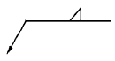
- 홈 용접
- 플러그 용접
- 필렛 용접
- 맞대기 용접
(정답률: 알수없음)
47. 프리핸드로 그리는 선(線)은?
- 치수 보조선
- 지시선
- 치수선
- 파단선
(정답률: 알수없음)
48. 물체의 보이지 않는 부분의 형상을 나타내는 선은?
- 파선
- 일점 쇄선
- 이점 쇄선
- 가는 실선
(정답률: 알수없음)
49. 다음 그림에서 형깊이를 나타내는 치수선은?(문제의 그림이 정확하지 않습니다. 정확한 내용을 아시는 분께서는 오류 신고를 통하여 내용작성 부탁드립니다. 정답은 1번입니다.)
- ①
- ②
- ③
- ④
(정답률: 알수없음)
50. 청수탱크의 약자는?
- F.O.T
- F.P
- F.P.T
- F.W.T
(정답률: 알수없음)
51. 밸러스트 탱크의 약자는?
- W.N.D
- W.B.T
- W.T.D
- W.T.H
(정답률: 알수없음)
52. 조립 부재가 "a × b + c × d"로 도시되어 있다면 면재의 폭을 나타내는 것은?
- a
- b
- c
- d
(정답률: 알수없음)
53. 다음 선체공작도 그림에서 S.부분이 뜻하는 것은?
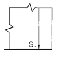
- 작업을 끝낼 때(stop)
- 브래킷(bracket)
- 스닙(snip)
- 스트랩 용접(strap joint)
(정답률: 알수없음)
54. 외판전개도를 그리기 위하여 먼저 구조용 정면선도를 그리는데 어떤 도면을 기초로 작성하는가?
- 선도, 중앙횡단면도
- 중앙횡단면도, 강재 배치도
- 강재배치도, 일반배치도
- 일반배치도, 세로이음새 정면선도
(정답률: 알수없음)
55. 그림과 같이 종방향으로 부재가 관통하는 경우의 기호로 옳은 것은? (단, 화살표 방향에서 본 경우)
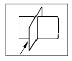
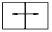
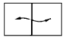
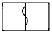
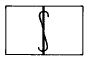
(정답률: 알수없음)
56. 다음과 같은 약도는 무엇을 나타내는가?
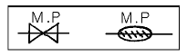
- 페어 리더
- 와이어 릴
- 계선 구멍
- 컴퍼스
(정답률: 알수없음)
57. 선박의 창고나 각 방의 문에 관하여 상세하게 그린 도면은?
- 제관 계통도
- 제실 장치도
- 계선 장치도
- 하역 장치도
(정답률: 알수없음)
58. 종강력 부재에 속하지 않는 것은?
- 중심선 거더
- 내저판
- 마진 플레이트
- 늑골
(정답률: 알수없음)
59. 선체강도 부재 중 횡강도에 가장 크게 기여하는 부재는?
- 외판
- 갑판 거더
- 선측 종통제
- 횡격벽
(정답률: 알수없음)
60. 선도(lines) 용어 및 기호 중 선수 수선(垂線)은?
- C.L
- B.L
- F.P
- A.P
(정답률: 알수없음)